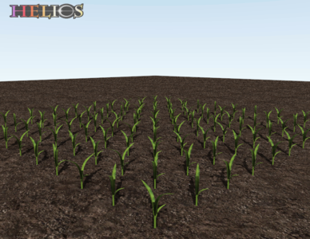
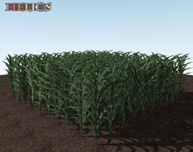
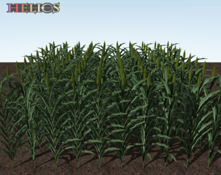
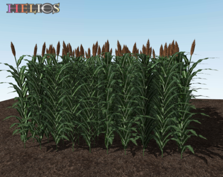

|
v1.3.37
|

|
|
v1.3.37
|
|
| Dependencies | none |
|---|---|
| CMakeLists.txt | set( PLUGINS "canopygenerator" ) |
| Header File | include "CanopyGenerator.h" |
| Class | CanopyGenerator |
The Canopy Generator plug-in provides an interface for creating a number of different types of plant canopy geometries. Each geometry has a data structure containing the geometric parameter values, which allows for easy customization of the specifics of the canopy.
| Constructors |
|---|
| CanopyGenerator( helios::Context* context ) |
The CanopyGenerator class is initialized by simply passing a pointer to the Helios context as an argument to the constructor. This gives the class the ability to directly generate primitives within the context.
The homogeneous canopy consists of a "slab" of canopy, with leaf positions sampled from a uniform random distribution within a rectangular volume.
| Parameters Structure | HomogeneousCanopyParameters |
|---|---|
| Individual Plant Function | N/A |
| Canopy Build Function | buildCanopy() |
| Parameter Name | Data Type | Description | Default Value |
|---|---|---|---|
| leaf_size | helios::vec2 | Length and width of each leaf. | (0.1,0.1) |
| leaf_subdivisions | helios::int2 | Number of sub-patch divisions for each leaf along the length and width of the leaf (subdivisions of 1x1 means leaf is not sub-divided). | (1,1) |
| leaf_color | helios::RGBcolor | Color of leaves if a texture map file is not provided (see 'leaf_texture_file' parameter). | RGB::green |
| leaf_texture_file | std::string | Path to image for texture mapping/masking of leaves. | none |
| leaf_angle_distribution | std::string | Leaf angle distribution - one of "spherical", "uniform", "erectophile", "planophile", "plagiophile", "extremophile" | "spherical" |
| leaf_area_index | float | One-sided leaf area in canopy per unit ground surface area. | 1.0 |
| canopy_height | float | Height/depth of the canopy. | 1.0 |
| canopy_extent | helios::vec2 | Dimension of the canopy in the x- and y-directions. | (5,5) |
| canopy_origin | helios::vec3 | Cartesian x,y (horizontal) point about which the canopy is centered. z-coordinate is at the bottom surface of the canopy. | (0,0,0) |
| buffer | std::string | String specifying whether leaves should be placed so that leaf edges do not fall outside the specified canopy dimensions ("z", "xyz", or "none"). | "z" |
The spherical crowns canopy consists of spherical/ellipsoidal volumes of vegetation filled with homogeneous leaves.
| Parameters Structure | SphericalCrownsCanopyParameters |
|---|---|
| Individual Plant Function | N/A |
| Canopy Build Function | buildCanopy() |
| Parameter Name | Data Type | Description | Default Value |
|---|---|---|---|
| Properties of Plants | |||
| leaf_size | helios::vec2 | Length and width of each leaf. | (0.025,0.025) |
| leaf_subdivisions | helios::int2 | Number of sub-patch divisions for each leaf along the length and width of the leaf (subdivivisions of 1x1 means leaf is not sub-divided). | (1,1) |
| leaf_color | helios::RGBcolor | Color of leaves if a texture map file is not provided (see 'leaf_texture_file' parameter). | RGB::green |
| leaf_texture_file | std::string | Path to image for texture mapping/masking of leaves. | none |
| leaf_angle_distribution | std::string | Leaf angle distribution - one of "spherical", "uniform", "erectophile", "planophile", "plagiophile", "extremophile" | "spherical" |
| leaf_area_density | float | One-sided leaf area density in each crown (i.e., LAD is equal to the total leaf area in a crown divided by \(4/3\pi R^3\)). | 1.0 |
| crown_radius | helios::vec3 | Principal radii of spherical/ellipsoidal crown. | (0.5,0.5,0.5) |
| Properties of Canopy | |||
| canopy_configuration | std::string | Horizontal arrangement of crowns. Either "uniform", evenly spaced crowns in x- or y-direction, or "random", randomly arranged crowns such that crowns do not overlap. | "uniform" |
| plant_spacing | helios::vec2 | Spacing between adjacent crowns in x- and y-directions. If canopy_configuration="random", this is the average spacing between crowns. | (2,2) |
| plant_count | helios::int2 | Number of crowns in the x- and y-directions, such that plant_spacing*plant_count defines the extent of the canopy in the horizontal directions. | (5,5) |
| canopy_origin | helios::vec3 | Cartesian x,y (horizontal) point about which the canopy is centered. z-coordinate is at the bottom surface of the canopy. | (0,0,0) |
| canopy_rotation | float | Azimuthal rotation of the entire canopy (in radians) about the origin/center point. | 0 |
The conical crowns canopy consists of conical volumes of vegetation filled with homogeneous leaves.
| Parameters Structure | ConicalCrownsCanopyParameters |
|---|---|
| Individual Plant Function | N/A |
| Canopy Build Function | buildCanopy() |
| Parameter Name | Data Type | Description | Default Value |
|---|---|---|---|
| Properties of Plants | |||
| leaf_size | helios::vec2 | Length and width of each leaf. | (0.025,0.025) |
| leaf_subdivisions | helios::int2 | Number of sub-patch divisions for each leaf along the length and width of the leaf (subdivivisions of 1x1 means leaf is not sub-divided). | (1,1) |
| leaf_color | helios::RGBcolor | Color of leaves if a texture map file is not provided (see 'leaf_texture_file' parameter). | RGB::green |
| leaf_texture_file | std::string | Path to image for texture mapping/masking of leaves. | none |
| leaf_angle_distribution | std::string | Leaf angle distribution - one of "spherical", "uniform", "erectophile", "planophile", "plagiophile", "extremophile" | "spherical" |
| leaf_area_density | float | One-sided leaf area density in each crown (i.e., LAD is equal to the total leaf area in a crown divided by \(4/3\pi R^3\)). | 1.0 |
| crown_radius | float | Radius of cone base. | 0.5 |
| crown_height | float | Height of cone. | 1.0 |
| Properties of Canopy | |||
| canopy_configuration | std::string | Horizontal arrangement of crowns. Either "uniform", evenly spaced crowns in x- or y-direction, or "random", randomly arranged crowns such that crowns do not overlap. | "uniform" |
| plant_spacing | helios::vec2 | Spacing between adjacent crowns in x- and y-directions. If canopy_configuration="random", this is the average spacing between crowns. | (2,2) |
| plant_count | helios::int2 | Number of crowns in the x- and y-directions, such that plant_spacing*plant_count defines the extent of the canopy in the horizontal directions. | (5,5) |
| canopy_origin | helios::vec3 | Cartesian x,y (horizontal) point about which the canopy is centered. z-coordinate is at the bottom surface of the canopy. | (0,0,0) |
| canopy_rotation | float | Azimuthal rotation of the entire canopy (in radians) about the origin/center point. | 0 |
A canopy of grapevine with a vertical shoot positioned (VSP) trellis.
| Parameters Structure | VSPGrapevineParameters |
|---|---|
| Individual Plant Function | grapevineVSP() |
| Canopy Build Function | buildCanopy() |
| Parameter Name | Data Type | Description | Default Value |
|---|---|---|---|
| Properties of Plants | |||
| leaf_width | float | Maximum leaf width at the base of shoot. | 0.18 |
| leaf_subdivisions | helios::int2 | Number of sub-patch divisions for each leaf along the length and width of the leaf (subdivivisions of 1x1 means leaf is not sub-divided). | (1,1) |
| leaf_texture_file | std::string | Path to image for leaf texture overlay. | "plugins/canopygenerator/textures/GrapeLeaf.png" |
| wood_texture_file | std::string | Path to image for trunk and shoot texture overlay. | "plugins/canopygenerator/textures/wood.jpg" |
| wood_subdivisions | int | Number of radial subdivisions for trunk and shoot tubes (e.g., if wood_subdivisions=3 the trunk/shoot would be a triangle, =4 would be a square, etc.). | 10 |
| trunk_height | float | Distance between the ground and the top of the trunk (head height). | 0.7 |
| trunk_radius | float | Radius of the trunk at the widest point. | 0.05 |
| cordon_height | float | Distance between the ground and the cordons. NOTE: cordon_height must be greater than or equal to the trunk_height. | 0.9 |
| cordon_radius | float | Radius of the cordon at the widest point. | 0.02 |
| shoot_length | float | Average length of shoots (distance from cordon to shoot tip). | 0.9 |
| shoot_radius | float | Radius of the shoot at the widest point. | 0.005 |
| shoots_per_cordon | uint | Number of shoots on each cordon (thus each plant has 2*shoots_per_cordon shoots). | 10 |
| leaf_spacing_fraction | float | Spacing between adjacent leaves on a shoot as a fraction of the leaf dimension. | 0.6 |
| grape_radius | float | Average radius of individual grape berries. NOTE: Setting grape_radius=0 will not create any grapes. | 0.0075 |
| cluster_radius | float | Average radius of grape clusters at the widest point. NOTE: Setting cluster_radius=0 will not create any grapes. | 0.03 |
| grape_color | helios::RGBcolor | Color of berry surface | (0.18, 0.2, 0.25) |
| grape_subdivisions | uint | Number of berry triangular subdivisions in the azimuthal and zenithal directions (each berry will consist of roughly 2*(grape_subdivisions)^2 triangles. | 8 |
| Properties of Canopy | |||
| plant_spacing | float | Spacing between adjacent plants in the row-parallel direction. NOTE: default is to have rows oriented in the x-direction (row-parallel). | 2.0 |
| row_spacing | float | Spacing between adjacent plants in the row-normal direction. NOTE: default is to have rows oriented in the x-direction (row-parallel). | 2.0 |
| plant_count | helios::int2 | Number of plants in the row-parallel (x-direction) and row-normal (y-direction). | (3,3) |
| canopy_origin | helios::vec3 | Cartesian x,y (horizontal) point about which the canopy is centered. z-coordinate is at the bottom surface of the canopy. | (0,0,0) |
| canopy_rotation | float | Azimuthal rotation of the entire canopy (in radians) about the origin/center point. | 0 |
A canopy of grapevine with a split trellis.
| Parameters Structure | SplitGrapevineParameters |
|---|---|
| Individual Plant Function | CanopyGenerator::grapevineSplit() |
| Canopy Build Function | buildCanopy() |
| Parameter Name | Data Type | Description | Default Value |
|---|---|---|---|
| Properties of Plants | |||
| leaf_width | float | Maximum leaf width at the base of shoot. | 0.18 |
| leaf_subdivisions | helios::int2 | Number of sub-patch divisions for each leaf along the length and width of the leaf (subdivivisions of 1x1 means leaf is not sub-divided). | (1,1) |
| leaf_texture_file | std::string | Path to image for leaf texture overlay. | "plugins/canopygenerator/textures/GrapeLeaf.png" |
| wood_texture_file | std::string | Path to image for trunk and shoot texture overlay. | "plugins/canopygenerator/textures/wood.jpg" |
| wood_subdivisions | int | Number of radial subdivisions for trunk and shoot tubes (e.g., if wood_subdivisions=3 the trunk/shoot would be a triangle, =4 would be a square, etc.). | 10 |
| trunk_height | float | Distance between the ground and the top of the trunk (head height). | 1.3 |
| trunk_radius | float | Radius of the trunk at the widest point. | 0.05 |
| cordon_height | float | Distance between the ground and the cordons. NOTE: cordon_height must be greater than or equal to the trunk_height. | 1.5 |
| cordon_radius | float | Radius of the cordon at the widest point. | 0.02 |
| cordon_spacing | float | Spacing between cordons in the row-normal direction. | 1.0 |
| shoot_length | float | Average length of shoots (distance from cordon to shoot tip). | 1.2 |
| shoot_radius | float | Radius of the shoot at the widest point. | 0.005 |
| shoots_per_cordon | uint | Number of shoots on each cordon (thus each plant has 4*shoots_per_cordon shoots). | 10 |
| shoot_angle_tip | float | Average angle of shoot tips relative to vertical (radians). | 0.4 \(\pi\) |
| leaf_spacing_fraction | float | Spacing between adjacent leaves on a shoot as a fraction of the leaf dimension. | 0.6 |
| grape_radius | float | Average radius of individual grape berries. NOTE: Setting grape_radius=0 will not create any grapes. | 0.0075 |
| cluster_radius | float | Average radius of grape clusters at the widest point. NOTE: Setting cluster_radius=0 will not create any grapes. | 0.03 |
| grape_color | helios::RGBcolor | Color of berry surface | (0.18, 0.2, 0.25) |
| grape_subdivisions | uint | Number of berry triangular subdivisions in the azimuthal and zenithal directions (each berry will consist of roughly 2*(grape_subdivisions)^2 triangles. | 8 |
| Properties of Canopy | |||
| plant_spacing | float | Spacing between adjacent plants in the row-parallel direction. NOTE: default is to have rows oriented in the x-direction (row-parallel). | 2.0 |
| row_spacing | float | Spacing between adjacent plants in the row-normal direction. NOTE: default is to have rows oriented in the x-direction (row-parallel). | 4.0 |
| plant_count | helios::int2 | Number of plants in the row-parallel (x-direction) and row-normal (y-direction). | (3,3) |
| canopy_origin | helios::vec3 | Cartesian x,y (horizontal) point about which the canopy is centered. z-coordinate is at the bottom surface of the canopy. | (0,0,0) |
| canopy_rotation | float | Azimuthal rotation of the entire canopy (in radians) about the origin/center point. | 0 |
A canopy of grapevine with a unilateral VSP trellis.
| Parameters Structure | UnilateralGrapevineParameters |
|---|---|
| Individual Plant Function | CanopyGenerator::grapevineUnilateral() |
| Canopy Build Function | buildCanopy() |
| Parameter Name | Data Type | Description | Default Value |
|---|---|---|---|
| Properties of Plants | |||
| leaf_width | float | Maximum leaf width at the base of shoot. | 0.18 |
| leaf_subdivisions | helios::int2 | Number of sub-patch divisions for each leaf along the length and width of the leaf (subdivivisions of 1x1 means leaf is not sub-divided). | (1,1) |
| leaf_texture_file | std::string | Path to image for leaf texture overlay. | "plugins/canopygenerator/textures/GrapeLeaf.png" |
| wood_texture_file | std::string | Path to image for trunk and shoot texture overlay. | "plugins/canopygenerator/textures/wood.jpg" |
| wood_subdivisions | int | Number of radial subdivisions for trunk and shoot tubes (e.g., if wood_subdivisions=3 the trunk/shoot would be a triangle, =4 would be a square, etc.). | 10 |
| trunk_height | float | Distance between the ground and the top of the trunk (head height). | 0.7 |
| trunk_radius | float | Radius of the trunk at the widest point. | 0.05 |
| cordon_height | float | Distance between the ground and the cordons. NOTE: cordon_height must be greater than or equal to the trunk_height. | 0.9 |
| cordon_radius | float | Radius of the cordon at the widest point. | 0.02 |
| shoot_length | float | Average length of shoots (distance from cordon to shoot tip). | 0.9 |
| shoot_radius | float | Radius of the shoot at the widest point. | 0.005 |
| shoots_per_cordon | uint | Number of shoots on each cordon. | 20 |
| shoot_angle_tip | float | Average angle of shoot tips relative to vertical (radians). | 0.4 \(\pi\) |
| leaf_spacing_fraction | float | Spacing between adjacent leaves on a shoot as a fraction of the leaf dimension. | 0.6 |
| grape_radius | float | Average radius of individual grape berries. NOTE: Setting grape_radius=0 will not create any grapes. | 0.0075 |
| cluster_radius | float | Average radius of grape clusters at the widest point. NOTE: Setting cluster_radius=0 will not create any grapes. | 0.03 |
| grape_color | helios::RGBcolor | Color of berry surface | (0.18, 0.2, 0.25) |
| grape_subdivisions | uint | Number of berry triangular subdivisions in the azimuthal and zenithal directions (each berry will consist of roughly 2*(grape_subdivisions)^2 triangles. | 8 |
| Properties of Canopy | |||
| plant_spacing | float | Spacing between adjacent plants in the row-parallel direction. NOTE: default is to have rows oriented in the x-direction (row-parallel). | 2.0 |
| row_spacing | float | Spacing between adjacent plants in the row-normal direction. NOTE: default is to have rows oriented in the x-direction (row-parallel). | 2.0 |
| plant_count | helios::int2 | Number of plants in the row-parallel (x-direction) and row-normal (y-direction). | (3,3) |
| canopy_origin | helios::vec3 | Cartesian x,y (horizontal) point about which the canopy is centered. z-coordinate is at the bottom surface of the canopy. | (0,0,0) |
| canopy_rotation | float | Azimuthal rotation of the entire canopy (in radians) about the origin/center point. | 0 |
A canopy of grapevine with a Goblet (vent a taille) trellis.
| Parameters Structure | GobletGrapevineParameters |
|---|---|
| Individual Plant Function | CanopyGenerator::grapevineGoblet() |
| Canopy Build Function | buildCanopy() |
| Parameter Name | Data Type | Description | Default Value |
|---|---|---|---|
| Properties of Plants | |||
| leaf_width | float | Maximum leaf width at the base of shoot. | 0.18 |
| leaf_subdivisions | helios::int2 | Number of sub-patch divisions for each leaf along the length and width of the leaf (subdivivisions of 1x1 means leaf is not sub-divided). | (1,1) |
| leaf_texture_file | std::string | Path to image for leaf texture overlay. | "plugins/canopygenerator/textures/GrapeLeaf.png" |
| wood_texture_file | std::string | Path to image for trunk and shoot texture overlay. | "plugins/canopygenerator/textures/wood.jpg" |
| wood_subdivisions | int | Number of radial subdivisions for trunk and shoot tubes (e.g., if wood_subdivisions=3 the trunk/shoot would be a triangle, =4 would be a square, etc.). | 10 |
| trunk_height | float | Distance between the ground and the top of the trunk (head height). | 0.7 |
| trunk_radius | float | Radius of the trunk at the widest point. | 0.05 |
| cordon_height | float | Distance between the ground and the cordons. NOTE: cordon_height must be greater than or equal to the trunk_height. | 0.9 |
| cordon_radius | float | Radius of the cordon at the widest point. | 0.02 |
| shoot_length | float | Average length of shoots (distance from cordon to shoot tip). | 0.9 |
| shoot_radius | float | Radius of the shoot at the widest point. | 0.005 |
| shoots_per_cordon | uint | Number of shoots on each cordon. | 10 |
| shoot_angle_tip | float | Average angle of shoot tips relative to vertical (radians). | 0.4 \(\pi\) |
| leaf_spacing_fraction | float | Spacing between adjacent leaves on a shoot as a fraction of the leaf dimension. | 0.6 |
| grape_radius | float | Average radius of individual grape berries. NOTE: Setting grape_radius=0 will not create any grapes. | 0.0075 |
| cluster_radius | float | Average radius of grape clusters at the widest point. NOTE: Setting cluster_radius=0 will not create any grapes. | 0.03 |
| grape_color | helios::RGBcolor | Color of berry surface | (0.18, 0.2, 0.25) |
| grape_subdivisions | uint | Number of berry triangular subdivisions in the azimuthal and zenithal directions (each berry will consist of roughly 2*(grape_subdivisions)^2 triangles. | 8 |
| Properties of Canopy | |||
| plant_spacing | float | Spacing between adjacent plants in the row-parallel direction. NOTE: default is to have rows oriented in the x-direction (row-parallel). | 2.0 |
| row_spacing | float | Spacing between adjacent plants in the row-normal direction. NOTE: default is to have rows oriented in the x-direction (row-parallel). | 2.0 |
| plant_count | helios::int2 | Number of plants in the row-parallel (x-direction) and row-normal (y-direction). | (3,3) |
| canopy_origin | helios::vec3 | Cartesian x,y (horizontal) point about which the canopy is centered. z-coordinate is at the bottom surface of the canopy. | (0,0,0) |
| canopy_rotation | float | Azimuthal rotation of the entire canopy (in radians) about the origin/center point. | 0 |
A canopy of strawberry plants.
| Parameters Structure | StrawberryParameters |
|---|---|
| Individual Plant Function | CanopyGenerator::strawberry() |
| Canopy Build Function | buildCanopy() |
| Parameter Name | Data Type | Description | Default Value |
|---|---|---|---|
| Properties of Plants | |||
| leaf_length | float | Maximum length of a leaf. | 0.1 |
| leaf_subdivisions | helios::int2 | Number of sub-patch divisions for each leaf along the length and width of the leaf (subdivivisions of 1x1 means leaf is not sub-divided). | (4,4) |
| leaf_texture_file | std::string | Path to image for leaf texture overlay. | "plugins/canopygenerator/textures/StrawberryLeaf.png" |
| stem_subdivisions | int | Number of radial subdivisions for stem tubes (e.g., if stem_subdivisions=3 the stem would be a triangle, =4 would be a square, etc.). | 10 |
| stem_radius | float | Radius of the stem at the widest point. | 0.005 |
| plant_height | float | Average effective height of the plant. | 0.4 |
| stems_per_plant | int | Number of stems on each plant. | 50 |
| fruit_radius | float | Maximum horizontal radius of individual berries. NOTE: Setting fruit_radius=0 will not create any berries. | 0.025 |
| clusters_per_stem | float | Average number of berry clusters per stem (usually <1). NOTE: Setting clusters_per_stem=0 will not create any berries. | 0.6 |
| fruit_subdivisions | uint | Number of berry triangular subdivisions in the azimuthal direction. | 12 |
| fruit_texture_file | std::string | Path to image for berry texture overlay. | "plugins/canopygenerator/textures/StrawberryTexture.jpg" |
| Properties of Canopy | |||
| plant_spacing | float | Spacing between adjacent plants in the row-parallel direction. NOTE: default is to have rows oriented in the x-direction (row-parallel). | 0.5 |
| row_spacing | float | Spacing between adjacent plants in the row-normal direction. NOTE: default is to have rows oriented in the x-direction (row-parallel). | 1.5 |
| plant_count | helios::int2 | Number of plants in the row-parallel (x-direction) and row-normal (y-direction). | (4,2) |
| canopy_origin | helios::vec3 | Cartesian x,y (horizontal) point about which the canopy is centered. z-coordinate is at the bottom surface of the canopy. | (0,0,0) |
| canopy_rotation | float | Azimuthal rotation of the entire canopy (in radians) about the origin/center point. | 0 |
A canopy of walnut trees.
| Parameters Structure | WalnutCanopyParameters |
|---|---|
| Individual Plant Function | CanopyGenerator::walnut() |
| Canopy Build Function | buildCanopy() |
| Parameter Name | Data Type | Description | Default Value |
|---|---|---|---|
| Properties of Plants | |||
| leaf_length | float | Maximum length of a leaf along midrib. | 0.15 |
| leaf_subdivisions | helios::int2 | Number of sub-patch divisions for each leaf along the length and width of the leaf (subdivivisions of 1x1 means leaf is not sub-divided). | (1,2) |
| leaf_texture_file | std::string | Path to image for leaf texture overlay. | "plugins/canopygenerator/textures/WalnutLeaf.png" |
| wood_subdivisions | int | Number of radial subdivisions for woody element tubes (e.g., if wood_subdivisions=3 the stem would be a triangle, =4 would be a square, etc.). | 10 |
| trunk_radius | float | Radius of the trunk at the widest point. | 0.15 |
| trunk_height | float | Average height of the trunk. | 4.0 |
| branch_length | helios::vec3 | Average length of branches in each recursive branch level. For example, the first (.x) value is the length of branches emanating from the trunk, the second (.y) is the the length of branches emanating from the first branching level. | (4.0,0.75,0.75) |
| fruit_radius | float | Maximum horizontal radius of individual walnuts. NOTE: Setting fruit_radius=0 will not create any nuts. | 0.04 |
| fruit_texture_file | std::string | Path to image for nut texture overlay. | "plugins/canopygenerator/textures/WalnutTexture.jpg" |
| fruit_subdivisions | uint | Number of nut triangular subdivisions in the azimuthal direction. | 16 |
| Properties of Canopy | |||
| plant_spacing | float | Spacing between adjacent plants in the row-parallel direction. NOTE: default is to have rows oriented in the x-direction (row-parallel). | 6.0 |
| row_spacing | float | Spacing between adjacent plants in the row-normal direction. NOTE: default is to have rows oriented in the x-direction (row-parallel). | 8.0 |
| plant_count | helios::int2 | Number of plants in the row-parallel (x-direction) and row-normal (y-direction). | (4,2) |
| canopy_origin | helios::vec3 | Cartesian x,y (horizontal) point about which the canopy is centered. z-coordinate is at the bottom surface of the canopy. | (0,0,0) |
| canopy_rotation | float | Azimuthal rotation of the entire canopy (in radians) about the origin/center point. | 0 |
A canopy of sorghum plants.

| 
|

|

|

|
| Stage 1 | Stage 2 | Stage 3 | Stage 4 | Stage 5 |
| Parameters Structure | SorghumCanopyParameters |
|---|---|
| Individual Plant Function | CanopyGenerator::sorghum() |
| Canopy Build Function | buildCanopy() |
| Parameter Name | Data Type | Description | Default Value |
|---|---|---|---|
| Sorghum stage | |||
| sorghum_stage | int | Sorghum categorized into 5 stages; 1 - Three leaf stage, 2 - Five leaf stage, 3 - Panicle initiation and flag leaf emergency, 4 - Booting, and flowering, 5 - Maturity; Input of a value other than 1-5 will output stage 5. | 5 |
| Properties of Plants | |||
| sorghum stage 1 | |||
| s1_stem_length | float | Length of the sorghum stem for stage 1. | 0.04 |
| s1_stem_radius | float | Radius of the sorghum stem for stage 1. | 0.003 |
| s1_stem_subdivisions | float | Number of stem radial subdivisions for stage 1. | 10 |
| s1_leaf_size1 | helios::vec2 | Length of leaf1 in x- (length) and y- (width) directions (prior to rotation) for stage 1. | (0.14,0.012) |
| s1_leaf_size2 | helios::vec2 | Length of leaf2 in x- (length) and y- (width) directions (prior to rotation) for stage 1. | (0.12,0.012) |
| s1_leaf_size3 | helios::vec2 | Length of leaf3 in x- (length) and y- (width) directions (prior to rotation) for stage 1. | (0.06,0.008) |
| s1_leaf1_angle | float | Leaf1 vertical angle of rotation for stage 1. | 50 |
| s1_leaf2_angle | float | Leaf2 vertical angle of rotation for stage 1. | 50 |
| s1_leaf3_angle | float | Leaf3 vertical angle of rotation for stage 1. | 50 |
| s1_leaf_subdivisions | helios::int2 | Number of sub-patch divisions for each leaf along the length and width of the leaf for stage 1 (subdivivisions of 1x1 means leaf is not sub-divided). | (20,2) |
| s1_leaf_texture_file | std::string | Texture map for sorghum leaf for stage 1. | "plugins/canopygenerator/textures/s1_Sorghum_leaf.png" |
| sorghum stage 2 | |||
| s2_stem_length | float | Length of the sorghum stem for stage 2. | 0.2 |
| s2_stem_radius | float | Radius of the sorghum stem for stage 2. | 0.003 |
| s2_stem_subdivisions | float | Number of stem radial subdivisions for stage 2. | 10 |
| s2_leaf_size1 | helios::vec2 | Length of leaf1 in x- (length) and y- (width) directions (prior to rotation) for stage 2. | (0.25,0.02) |
| s2_leaf_size2 | helios::vec2 | Length of leaf2 in x- (length) and y- (width) directions (prior to rotation) for stage 2. | (0.14,0.02) |
| s2_leaf_size3 | helios::vec2 | Length of leaf3 in x- (length) and y- (width) directions (prior to rotation) for stage 2. | (0.2,0.015) |
| s2_leaf_size4 | helios::vec2 | Length of leaf4 in x- (length) and y- (width) directions (prior to rotation) for stage 2. | (0.12,0.012) |
| s2_leaf_size5 | helios::vec2 | Length of leaf5 in x- (length) and y- (width) directions (prior to rotation) for stage 2. | (0.08,0.01) |
| s2_leaf1_angle | float | Leaf1 vertical angle of rotation for stage 2. | 25 |
| s2_leaf2_angle | float | Leaf2 vertical angle of rotation for stage 2. | 50 |
| s2_leaf3_angle | float | Leaf3 vertical angle of rotation for stage 2. | 15 |
| s2_leaf4_angle | float | Leaf2 vertical angle of rotation for stage 2. | 25 |
| s2_leaf5_angle | float | Leaf3 vertical angle of rotation for stage 2. | 10 |
| s2_leaf_subdivisions | helios::int2 | Number of sub-patch divisions for each leaf along the length and width of the leaf for stage 2 (subdivivisions of 1x1 means leaf is not sub-divided). | (30,2) |
| s2_leaf_texture_file | std::string | Texture map for sorghum leaf for stage 2. | "plugins/canopygenerator/textures/s2_Sorghum_leaf.png" |
| sorghum stage 3 | |||
| s3_stem_length | float | Length of the sorghum stem for stage 3. | 1.2 |
| s3_stem_radius | float | Radius of the sorghum stem for stage 3. | 0.01 |
| s3_stem_subdivisions | float | Number of stem radial subdivisions for stage 3. | 10 |
| s3_leaf_size1 | helios::vec2 | Length of leaf1 in x- (length) and y- (width) directions (prior to rotation) for stage 3. | (0.8,0.08) |
| s3_leaf_subdivisions | helios::int2 | Number of sub-patch divisions for each leaf along the length and width of the leaf for stage 3 (subdivivisions of 1x1 means leaf is not sub-divided). | (30,2) |
| s3_number_of_leaves | int | Number of leaves along the stem for stage 3. | 15 |
| s3_mean_leaf_angle | float | Mean vertical angle of rotation of leaf for stage 3 in degrees; Standard deviation for the leaves is 5 degrees. | 45 |
| s3_leaf_texture_file | std::string | Texture map for sorghum leaf for stage 3. | "plugins/canopygenerator/textures/s3_Sorghum_leaf.png" |
| sorghum stage 4 | |||
| s4_stem_length | float | Length of the sorghum stem for stage 4. | 1.6 |
| s4_stem_radius | float | Radius of the sorghum stem for stage 4. | 0.01 |
| s4_stem_subdivisions | float | Number of stem radial subdivisions for stage 4. | 10 |
| s4_panicle_size | helios::vec2 | Size of panicle in x- and y- directions for stage 4. | (0.2,0.06) |
| s4_panicle_subdivisions | int | Number of panicle subdivisions for each grain sphere within a panicle, stage 4. | 5 |
| s4_seed_texture_file | std::string | Texture map of the panicle for stage 4. | "plugins/canopygenerator/textures/s4_Sorghum_seed.png" |
| s4_leaf_size | helios::vec2 | Length of leaf in x- (length) and y- (width) directions (prior to rotation) for stage 4. | (0.8,0.08) |
| s4_leaf_subdivisions | helios::int2 | Number of sub-patch divisions for each leaf along the length and width of the leaf for stage 4 (subdivivisions of 1x1 means leaf is not sub-divided). | (30,2) |
| s4_number_of_leaves | int | Number of leaves along the stem for stage 4. | 15 |
| s4_mean_leaf_angle | float | Mean vertical angle of rotation of leaf for stage 4 in degrees; Standard deviation for the angle is 5 degrees. | 45 |
| s4_leaf_texture_file | std::string | Texture map for sorghum leaf for stage 4. | "plugins/canopygenerator/textures/s4_Sorghum_leaf.png" |
| sorghum stage 5 | |||
| s5_stem_length | float | Length of the sorghum stem for stage 5. | 2.5 |
| s5_stem_radius | float | Radius of the sorghum stem for stage 5. | 0.01 |
| s5_bend | float | Bend of the stem from mid-section for stage 5. The distance from the mid-section of the stem to the imaginary perpendicular along the origin. i.e stem bend = 0 outputs a straight stem. | 0.15 |
| s5_stem_subdivisions | float | Number of stem radial subdivisions for stage 5. | 10 |
| s5_panicle_size | helios::vec2 | Size of panicle in x- and y- directions for stage 5. | (0.3,0.08) |
| s5_panicle_subdivisions | int | Number of panicle subdivisions for each each grain sphere within a panicle, stage 5. | 5 |
| s5_seed_texture_file | std::string | Texture map of the panicle for stage 5. | "plugins/canopygenerator/textures/s5_Sorghum_seed.png" |
| s5_leaf_size | helios::vec2 | Length of leaf in x- (length) and y- (width) directions (prior to rotation) for stage 5. | (0.9,0.125) |
| s5_leaf_subdivisions | helios::int2 | Number of sub-patch divisions for each leaf along the length and width of the leaf for stage 5 (subdivivisions of 1x1 means leaf is not sub-divided). | (30,2) |
| s5_number_of_leaves | int | Number of leaves along the stem for stage 5. | 24 |
| s5_mean_leaf_angle | float | Mean vertical angle of rotation of leaf for stage 5 in degrees; Standard deviation for the angle is 10 degrees. | 20 |
| s5_leaf_texture_file | std::string | Texture map for sorghum leaf for stage 5. | "plugins/canopygenerator/textures/s5_Sorghum_leaf.png" |
| Properties of Canopy | |||
| plant_spacing | float | Spacing between adjacent plants in the row-parallel direction. NOTE: default is to have rows oriented in the x-direction (row-parallel). | 0.45 |
| row_spacing | float | Spacing between adjacent plants in the row-normal direction. NOTE: default is to have rows oriented in the x-direction (row-parallel). | 0.45 |
| plant_count | helios::int2 | Number of plants in the row-parallel (x-direction) and row-normal (y-direction). | (10,10) |
| canopy_origin | helios::vec3 | Cartesian x,y (horizontal) point about which the canopy is centered. z-coordinate is at the bottom surface of the canopy. | (0,0,0) |
| canopy_rotation | float | Azimuthal rotation of the entire canopy (in radians) about the origin/center point. | 0 |
The CanopyGenerator plug-in provides a function to easily build a ground surface comprised of many textured patches. The resolution of each textured patch can also be increased by tiling it with sub-patches.
Example code is given below:
Maximum flexibility in creating a canopy of plants is achieved by manually adding each individual plant. An example is given below to add a single grapevine plant on VSP trellis at the point (0,0,0).
The function grapevineVSP() could be called many times with different origin positions to create any canopy that is desired. Below, we will introduce functions that automatically generate a canopy according to the values set in the parameters structure.
Functions are available for each plant type to quickly generate a canopy of many plants using the associated "buildCanopy()" function. The example below shows how to build a vineyard on VSP trellis.
The UUIDs of primitives making up the canopy geometry are grouped into four different types of elements: trunks, branches/shoots, leaves, and fruit. Not all canopy types will have all four groups of elements, for example the homogeneous canopy has no trunks, branches, or fruit. The UUIDs can be retrieved for a given plant using the appropriate getter function, as detailed in the table below. Additionally, UUIDs can be retrieved for the ground surface.
UUIDs of some element types are grouped by multiple levels of organization. For example, leaves are grouped by each individual leaf, which may be further subdivided into patches or triangles. In many cases, leaves may not have any subdivisions (as set within the parameters structure), and thus the size of the second index in the leaf UUIDs vector is equal to 1. If you try to index the leaf UUID vector at a value greater than 0, you will get an out of bounds error.
For trunks and branches, all UUIDs are aggregated together into a single 1D vector.
| Element Type | Getter Function | Data Type | First Index | Second Index | Third Index |
|---|---|---|---|---|---|
| Ground | CanopyGenerator::getGroundUUIDs() | std::vector<uint> | Patches within ground surface | N/A | N/A |
| Trunk | CanopyGenerator::getTrunkUUIDs( uint PlantID ) | std::vector<uint> | Triangles within trunk tube | N/A | N/A |
| Branches/Shoots | CanopyGenerator::getBranchUUIDs( uint PlantID ) | std::vector<uint> | Triangles within branch/shoot tubes | N/A | N/A |
| Leaves | CanopyGenerator::getLeafUUIDs( uint PlantID ) | std::vector<std::vector<uint> > | Leaves within plant | Sub-divisions within leaf (if applicable) | N/A |
| Fruit | CanopyGenerator::getFruitUUIDs( uint PlantID ) | std::vector<std::vector<std::vector<uint> > > | Fruit clusters within plant (if applicable) | Individual fruit within cluster (if applicable) | Triangles within individual fruit |
Each plant in the canopy is given an integer identifier, which starts at 0 and increases in the order plants are added. The total number of plants in the canopy can be queried with the function CanopyGenerator::getPlantCount().
Changing the default parameters for a particular geometry is simply a matter of declaring an instance of the parameter structure, and changing the values of the members. An example is given below in which the height and horizontal extent of a homogeneous canopy is modified before building.
Random variability is added to plant geometries using a pseudorandom number generator. By default, the random number sequence is seeded based on the system clock, which produces different results for each run.
If the exact same geometries are desired for successive runs, the random number generator can be manually seeded with the same value at the beginning of each run. This will still result in random variability between plants within the given canopy, but this randomness will be consistent no matter how many times the code is run.
The random number sequence can be manually seeded using the CanopyGenerator::seedRandomGenerator( uint seed ), which takes as its argument an unsigned integer. Regardless of its value, if this function is called with the same seed value at the beginning of the code, it will produce the exact same "random" number sequence. An example is given below.